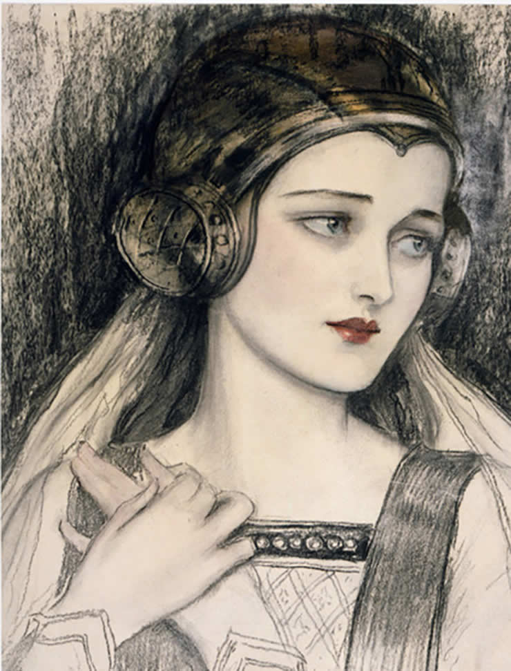

<!DOCTYPE html>
<html lang="en">
<head>
    <meta charset="UTF-8">
    <title>Canvas</title>
</head>
<body><!--
    <canvas id="myCanvas" width="200" height="200"
    style="border:1px solid #000000;">
    </canvas>
    
    
    
    <canvas id="myC2" width="200" height="200"
    style="border:1px solid #000000;">
    </canvas>-->
    <br>
    
    
    <canvas id="cnvs" width="300" height="300" style="background-color: #fff"></canvas>
    
    
    
    
    
    <script>
        /*var canvas = document.getElementById("myCanvas");
        var ctx = canvas.getContext("2d");
        ctx.fillStyle = "#200044";
        ctx.fillRect(0,50,150,100);
        
        ctx.moveTo(0,0);
        ctx.lineTo(100,100);
        ctx.stroke();
        
        ctx.beginPath();
        ctx.arc(95,50,50,Math.PI,0);
        ctx.stroke();
        
        var grd = ctx.createRadialGradient(205,100,55,205,100,56);
        grd.addColorStop(0,"red");
        grd.addColorStop(1,"green");
        
        //ctx.fillStyle = grd;
        //ctx.fillRect(0,0,370,200);
        
        ctx.font = "30px Times New Roman";
        ctx.fillText("Sujanta",10,50);
        
        
        window.onload = function() {
            var c = document.getElementById("myC2");
            var cty = c.getContext("2d");
            var img = document.getElementById("scream");
            cty.drawImage(img, 10, 10);
        };*/
        
        var c = document.getElementById("cnvs");
        var ct = c.getContext("2d");
        var r = c.height / 2;
        ct.translate(r,r);
        r = r * 0.90;
        
        setInterval(drawClock,1000);
        //drawClock();
        
        function drawClock(){
            drawFace(ct,r);
            drawNumber(ct,r);
            drawTime(ct,r);
        }
        function drawFace (ct,r){
            var grad;
            
            ct.beginPath();
            ct.arc(0,0,r,0,2*Math.PI);
            ct.fillStyle = 'white';
            ct.fill();
            
            grad = ct.createRadialGradient(0,0,r*0.95,0,0,r*1.05);
            
            grad.addColorStop(0.9,'#333');
            grad.addColorStop(0.66,'#fff');
            grad.addColorStop(0.4,'#333');
            grad.addColorStop(0.3,'#fff');
            grad.addColorStop(0,'#333');
            
            //grad.addColorStop(0, '#333');
            //grad.addColorStop(0.5, 'white');
            //grad.addColorStop(1, '#333');
            
            ct.strokeStyle = grad;
            ct.lineWidth = r*0.1;
            ct.stroke();
            
            ct.beginPath();
            ct.arc(0,0,r*0.07,0,2*Math.PI);
            ct.fillStyle = "#333";
            ct.fill();
        }
        
        function drawNumber(ct,r){
            var ang;
            var num;
            ct.font = r*0.15 + "px Times New Roman";
            ct.textBaseline = "middle";
            ct.textAlign = "center";
            for (num = 1; num<=12; ++num){
                ang = num * Math.PI/6;
                ct.rotate(ang);
                ct.translate(0,-r*0.85);
                ct.rotate(-ang);
                ct.fillText(num.toString(),0,0);
                ct.rotate(ang);
                ct.translate(0,r*0.85);
                ct.rotate(-ang);
            }
        }
        
        function drawTime (ct,r){
            var now = new Date();
            var hours = now.getHours();
            var seconds = now.getSeconds();
            var minutes = now.getMinutes();
            
            hours = hours % 12;
            hours = (hours*Math.PI/6)+(minutes*Math.PI/(6*60))+(seconds*Math.PI/(360*60));
            drawHand(ct,hours,r*0.4,r*0.07);
            
            minutes = (minutes*Math.PI/30)+(seconds*Math.PI/(30*60));
            drawHand(ct,minutes,r*0.5,r*0.05);
            
            seconds = (seconds*Math.PI/(30));
            drawHand(ct,seconds,r*0.6,r*0.03);
        }
        
        function drawHand(ct,pos,l,w){
            ct.beginPath();
            ct.lineWidth = w;
            ct.lineCap = "round";
            ct.moveTo(0,0);
            ct.rotate(pos);
            ct.lineTo(0,-l);
            ct.stroke();
            ct.rotate(-pos);
        }
    </script>
</body>
</html>